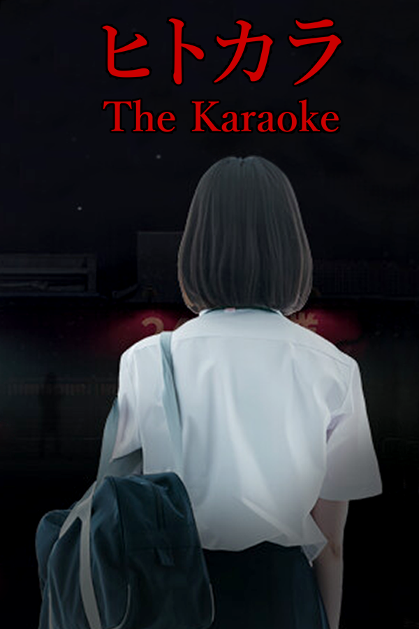

The Karaoke | ヒトカラ
Uma saída casual para cantar se transforma em um pesadelo psicológico claustrofóbico e aterrorizante.
Ir para DownloadsSobre o Jogo
Desenvolvido pelos mestres do horror japonês moderno, Chilla's Art, The Karaoke coloca você no papel de uma estudante de ensino médio que decide ir sozinha a um estabelecimento de karaokê à noite. O jogo utiliza uma estética sombria inspirada em fitas de vídeo antigas (estilo VHS film) para criar uma atmosfera sufocante e imersiva. Explore o cenário, resolva quebra-cabeças e tome decisões rápidas, pois cada escolha pode te guiar para um dos 6 finais diferentes disponíveis nesta perturbadora jornada de sobrevivência.
Trailer Oficial
Requisitos do Sistema
Mínimos
- SO: Windows 7 SP1+ (64-bit)
- Processador: Arquitetura Intel/AMD X64 com suporte a SSE2
- Memória: 4 GB de RAM
- Placa de vídeo: NVIDIA GTX 460 ou equivalente da AMD
- DirectX: Versão 11
- Armazenamento: 8 GB de espaço disponível
Recomendados
- SO: Windows 11 (64-bit)
- Processador: Intel Core i7-4770K ou equivalente da AMD
- Memória: 8 GB de RAM
- Placa de vídeo: NVIDIA GTX 950 ou equivalente da AMD
- DirectX: Versão 12
- Armazenamento: 8 GB de espaço disponível